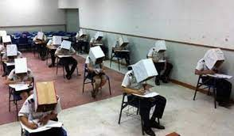
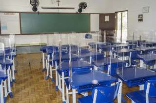

Escola gera polêmica ao retocar 'por pudor' fotos de 80 alunas nos EUA
Uma escola da Flórida está sendo criticada por alterar as fotos do anuário de 80 alunas para cobrir seus peitos e ombros. Nenhuma foto de aluno do sexo masculino foi alterada — mesmo quando eles aparecem sem camisa ou apenas de sunga.
Noticiado por: G1 (22 mai 2021 - 15h32)
MEC admite não ter dinheiro para Enem e bolsas de pesquisa
O Ministério da Educação (MEC) admitiu em documento ao ministro da Economia, Paulo Guedes, que a verba destinada ao Exame Nacional do Ensino Médio (Enem) de 2021
é insuficiente para aplicar a prova a todos os participantes. Também vai faltar dinheiro para pagar bolsas de 92 mil cientistas, incluindo pesquisadores da covid-19,
médicos residentes e para livros didáticos. Em ofício obtido pelo Estadão, a pasta pede dinheiro para "viabilizar projetos" e fala em impactos pedagógicos "imensos".
O documento encaminhado nesta quinta-feira, 13, pelo ministro da Educação, Milton Ribeiro, à Economia pede o desbloqueio de R$ 2,7 bilhões e a suplementação de R$ 2,6
bilhões sob o risco de deixar sem verba "diversas demandas essenciais à área da educação", entre elas a realização do Enem, principal porta de entrada para o ensino
superior brasileiro. O MEC foi a pasta mais atingida pelo bloqueio de verbas realizado em abril pelo presidente Jair Bolsonaro.
Para aplicar o Enem, o Instituto Nacional de Estudos e Pesquisas Educacionais (Inep), órgão ligado ao MEC e responsável pelo exame, prevê gastar R$ 794 milhões este ano.
Com R$ 226,7 milhões bloqueados, o orçamento total do Inep é de R$ 1,183 bilhão, mas seria necessário quase o dobro do dinheiro para atender às necessidades da autarquia.
O Inep também realiza outras avaliações educacionais.

Noticiado por: Estadão (14 mai 2021 - 18h01)
Brasil pode regredir duas décadas no acesso à escola
Durante a pandemia, atividades escolares não chegam a crianças mais pobres; risco é de abandonar definitivamente o colégio.
O Brasil tem 5,1 milhões de crianças e adolescentes sem aulas na pandemia, o que representa 13,9% do total em idade escolar. As dificuldades com o ensino remoto aumentam os riscos de abandonar os estudos, e o País, que vinha avançando nos últimos anos, pode retroceder duas décadas no acesso à educação.

Noticiado por: Reuters (24 mai 2021 - 14h57)
Diretor de área responsável pelo Enem é exonerado do Inep
Após dois meses no cargo, o tenente-coronel aviador Alexandre Gomes da Silva foi exonerado da Diretoria de Avaliação da Educação Básica do Instituto Nacional de Estudos e Pesquisas Educacionais Anísio Teixeira (Inep). A mudança foi publicada na edição desta quarta-feira (26) do Diário Oficial da União.
O departamento é responsável, por exemplo, pela organização do Exame Nacional do Ensino Médio (Enem), que ainda não tem data marcada em 2021, e pelo Sistema de Avaliação da Educação Básica (Saeb), cuja aplicação neste ano ainda é incerta.
Ao G1, o Inep afirmou que a decisão de deixar o cargo foi tomada pelo próprio servidor, por motivos pessoais. Ele havia assumido a função em março, após seu antecessor, Carlos Roberto Pinto de Souza, morrer por complicações da Covid-19.